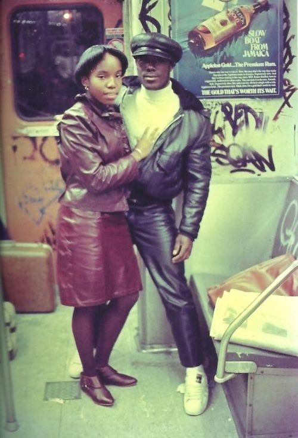
The couple that wears leather together, stays together.
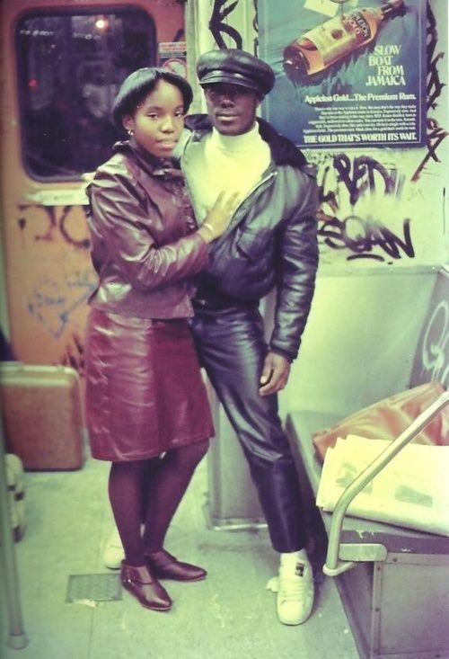
The couple that wears leather together, stays together.
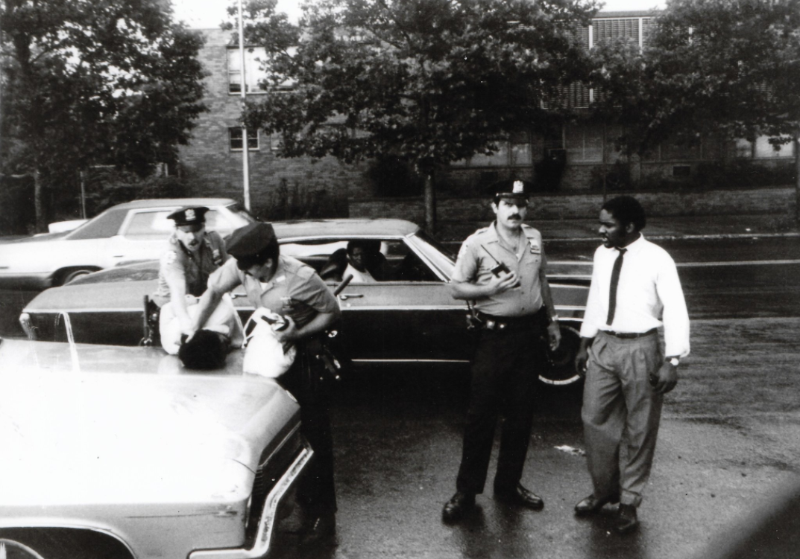
E. Flatbush, 1980
No, but I’ll look around…


Debbie Harry photographed by Bob Gruen at Coney Island, 1977.
She’s sitting in cigarette butts, pop tops, and bullet casings.
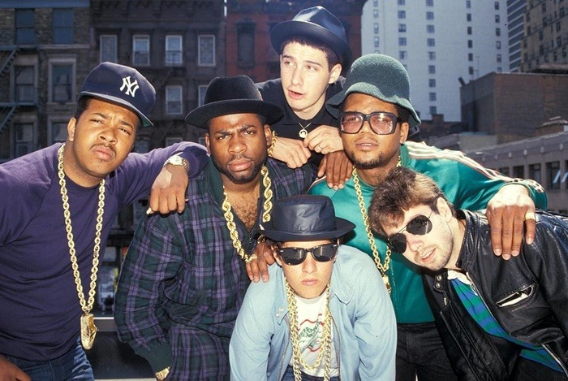
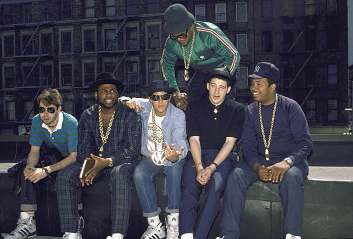
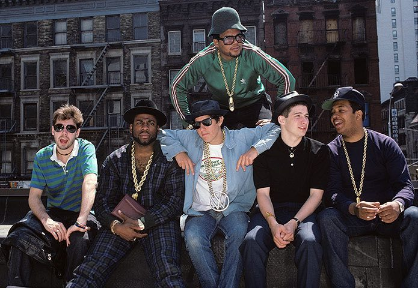
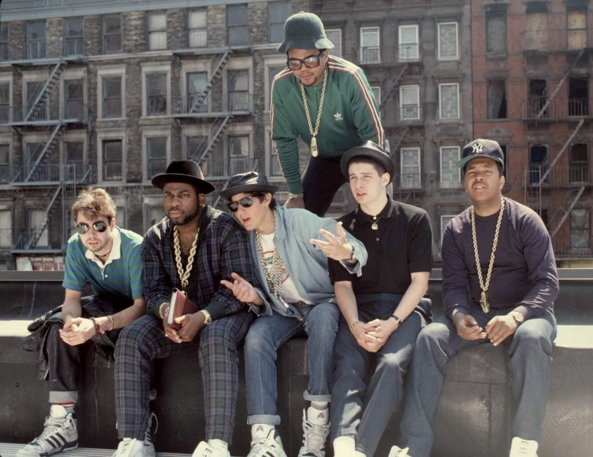
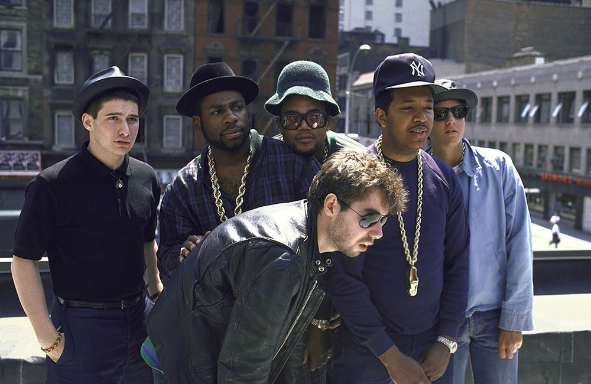
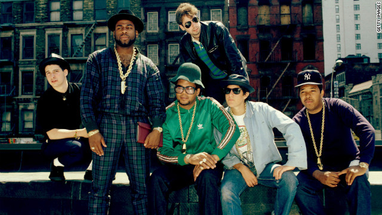
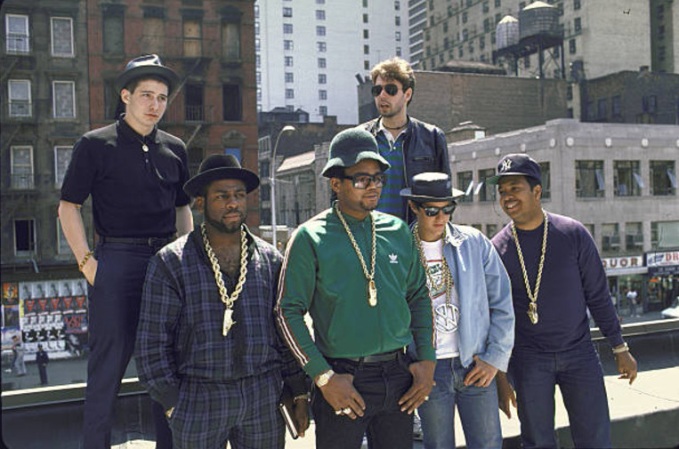
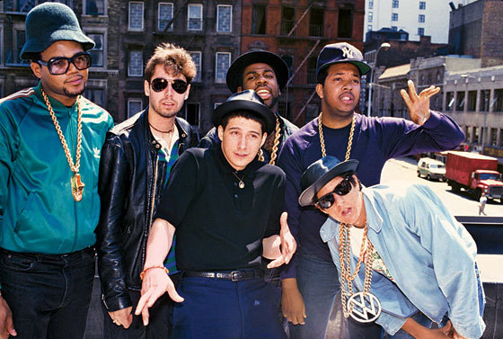
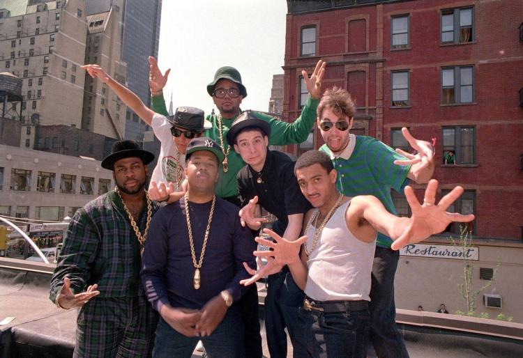
The Beastie Boys and Run-D.M.C. (1987)

Klaus Nomi, Christopher Parker, Jim Jarmusch, at the CBGB – Bowery 1978
by David Godlis

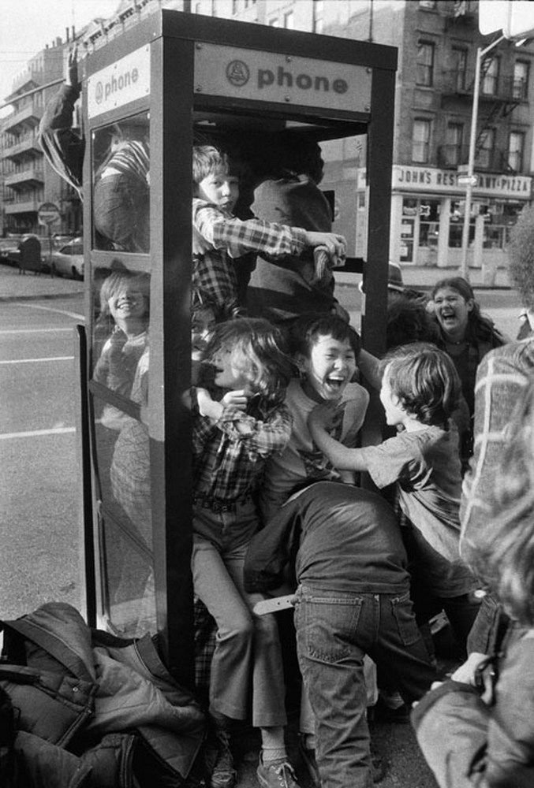
A group of friends trying to pile into a phone booth. New York, 1975.
via reddit
Julia and Pebbles on the way to Rockaway Beach. New York City, USA. 1979.
© Susan Meiselas/Magnum Photos
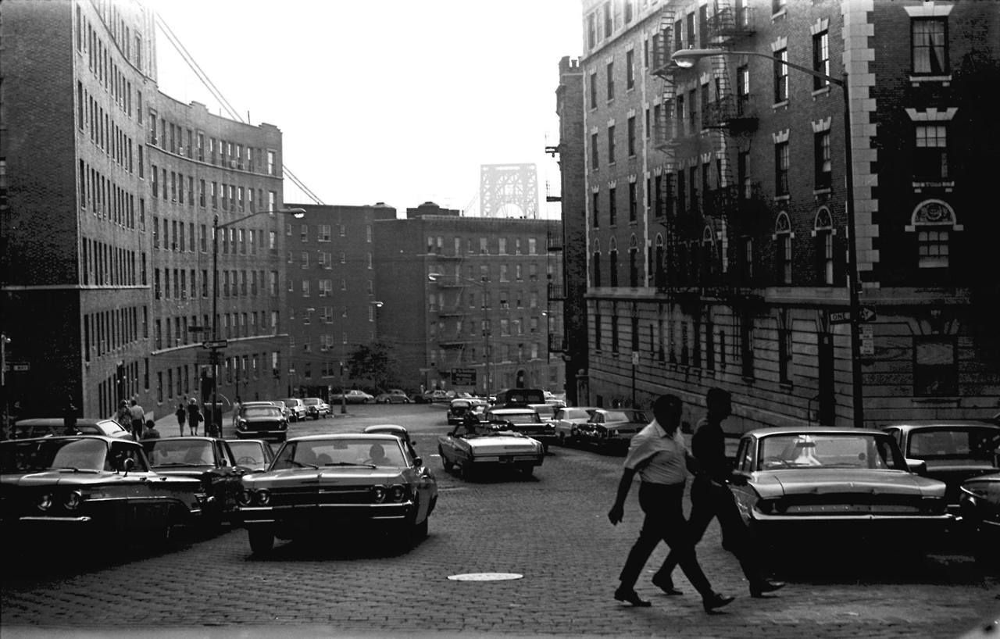
181st Street at Cabrini Boulevard, facing west.
1969 photo by Jeff March